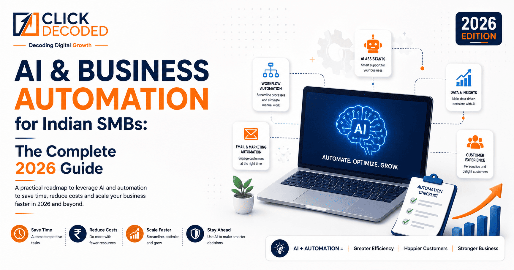

Here's the uncomfortable truth: your competitor — the one who seems to be everywhere at once, responding at midnight, following up instantly, posting daily — probably isn't working harder than you. They've automated most of it.

Business automation is no longer the territory of large enterprises with IT departments and million-rupee software budgets. In 2026, an Indian SMB with a ₹20,000/month technology budget can automate lead follow-up, customer support, invoice generation, social media, HR onboarding, and data reporting — with tools that require zero coding and can be set up in days, not months.
The shift is driven by three forces converging simultaneously: AI models that can understand context, write copy, and make decisions; no-code automation platforms that connect apps without engineering; and India-specific channels like WhatsApp that 500 million Indians already use daily for business communication. The result is that the barrier to meaningful automation has essentially collapsed.
This guide maps the entire automation landscape for Indian SMBs — 14 chapters covering every major automation category, the specific tools that work in the Indian context, and how to prioritise your implementation so you get ROI fast. Whether you're a bootstrapped founder, a growing agency, or a traditional business going digital, there's a clear path here.
⚡ Where to start: If you're new to automation, read the introduction and Chapter 1 first, then jump to whichever chapter matches your biggest time-sink. If you want someone to build it for you, get a free automation consultation from the Click Decoded team.
What Is Business Automation — and Why Indian SMBs Can't Afford to Ignore It
Business automation is the use of technology to perform tasks that would otherwise require human effort — repeatedly, reliably, and without breaks. At its simplest, it's a rule: "When X happens, do Y." When a lead fills out your website form, send them a WhatsApp message. When an invoice is overdue, send a reminder. When a customer asks a question on your website at 3am, answer it. These are all automations.
The reason Indian SMBs specifically need to pay attention in 2026 is the cost of labour versus the cost of technology. India's talent market is competitive — skilled staff cost more than they did five years ago, take longer to hire, and require management overhead. Meanwhile, automation tool costs are falling and capabilities are expanding dramatically thanks to AI. The economics have shifted decisively in favour of automating first and hiring only for genuinely human tasks.
The Three Tiers of Automation
Rule-based automation executes fixed sequences: send an email, update a spreadsheet, post to Instagram. No AI required, extremely reliable, and fast to implement. AI-assisted automation adds intelligence: a chatbot that understands natural language, a system that classifies leads by intent, a tool that writes personalised follow-up messages. Agentic automation — the frontier — involves AI that makes decisions, executes multi-step tasks, and adapts to context without human intervention. Indian businesses in 2026 should be actively implementing all three tiers.
The Automation Priority Framework for Indian SMBs
The highest-value automations to implement first are those that: (1) happen frequently — daily or multiple times per day; (2) are currently consuming trained staff time; (3) follow a predictable pattern; and (4) directly impact revenue or customer experience. Lead follow-up, invoice chasing, appointment reminders, and customer support responses score high on all four criteria for most Indian SMBs. These are your Day 1 automations.
WhatsApp Automation: India's Most Powerful Business Communication Channel
WhatsApp is not just a messaging app in India — it is the primary communication channel for hundreds of millions of people across every tier of city, every income bracket, and every age group. With over 500 million active users in India, WhatsApp is where your customers are already spending hours every day. WhatsApp automation turns this reach into a systematic business advantage.
WhatsApp Business API vs WhatsApp Business App
What You Can Automate on WhatsApp
Lead capture and qualification flows ask incoming leads a series of questions — "What's your budget?", "Which city are you in?", "What service are you looking for?" — and route qualified leads directly to the right salesperson. Order confirmation and tracking messages keep e-commerce customers informed without staff involvement. Appointment reminders reduce no-shows for clinics, salons, and consultants by 40–60%. Customer support FAQs handle the 80% of questions that are repetitive, freeing your team for complex cases. Payment reminders — sent via WhatsApp — have 3–5x higher open and action rates than email in the Indian market.
Compliance: Doing WhatsApp Automation Legally
All broadcast messages must go to customers who have explicitly opted in to receive messages from your business. Using unofficial bulk-messaging tools that bypass the API violates WhatsApp's terms and risks getting your number permanently banned. Implement double opt-in where possible, include clear unsubscribe instructions in every campaign message, and use a licensed BSP for all API access. Doing it right costs slightly more upfront but protects your business channel long-term.
AI Chatbot Development: Your 24/7 Sales and Support Agent
An AI chatbot is software that simulates human conversation using natural language processing — understanding what the user is asking, even when phrased unexpectedly, and responding usefully. A well-built chatbot is not a FAQ button with a menu — it's a conversation-capable agent that can qualify leads, answer product questions, book appointments, and escalate to a human when genuinely needed.
Where Chatbots Create the Most Value for Indian Businesses
Website chatbots greet visitors, answer questions about services or products, and capture leads even at 2am when no one is in the office. WhatsApp chatbots extend this capability to India's dominant messaging platform. E-commerce chatbots handle order tracking, returns, and size/availability questions — the majority of post-purchase support queries. Clinic and hospital chatbots handle appointment booking, symptom checking, and patient communication. Real estate chatbots qualify property seekers, schedule site visits, and answer project questions — replacing significant agent time on low-conversion enquiries.
AI Chatbot vs Rule-Based Chatbot
Multilingual Capability for India
Modern AI chatbots can understand and respond in Hindi, Tamil, Telugu, Marathi, Gujarati, and other Indian languages — as well as Hinglish. For businesses serving non-English-speaking customers in Tier 2 and Tier 3 cities, a multilingual chatbot dramatically improves engagement and conversion versus English-only alternatives.
Workflow Automation: Connecting Your Apps So Nothing Falls Through the Cracks
Every business runs on a stack of apps — a CRM, a form tool, a spreadsheet, an accounting system, an email platform, a project manager, a communication tool. The problem is that data moving between these apps requires human effort: copying a lead from a form into the CRM, updating a spreadsheet when a deal closes, creating a task when a client emails, generating an invoice when a project completes. Workflow automation connects these apps so the data moves automatically.
No-Code Automation Platforms
Tools like Zapier, Make.com (formerly Integromat), and n8n (which can be self-hosted for free) let you build automation workflows using a visual interface — no coding required. A "Zap" or "scenario" is a trigger-action pair: "When a new row is added to this Google Sheet, create a contact in Zoho CRM and send a WhatsApp message." These platforms connect with thousands of Indian-used apps including Razorpay, Zoho, Freshdesk, Tally, Notion, Gmail, Google Workspace, Slack, and hundreds more.
The 10 Workflow Automations Every Indian SMB Should Have
- New lead from website/form → CRM entry + WhatsApp welcome + sales team notification
- New payment received → Invoice generated + receipt emailed + accounting system updated
- Client onboarding trigger → Welcome email sequence + project folder created + team task assigned
- Overdue invoice → Reminder email + WhatsApp nudge sent after 3 / 7 / 14 days
- New Google review → Internal Slack notification + templated response drafted for team review
- Customer support ticket created → Auto-acknowledgement sent + ticket categorised + assigned to right team member
- Employee birthday / work anniversary → Automated HR message sent
- Social media post scheduled → Cross-posted to Instagram, Facebook, LinkedIn simultaneously
- New job application received → Acknowledgement sent + CV added to hiring pipeline
- Monthly report due → Data pulled from multiple sources + formatted report generated automatically
AI Content & Marketing Automation: Scale Your Marketing Without Scaling Your Team
Content marketing — blogs, social posts, emails, videos, ads — is one of the highest-ROI activities for Indian businesses, but also one of the most time-consuming. AI content automation doesn't replace human strategy and creativity; it eliminates the mechanical execution that eats hours every week.
What AI Can Automate in Your Marketing
Social media content can be drafted in bulk using AI tools, reviewed and approved by a human, then scheduled to post automatically via Buffer, Hootsuite, or native scheduling tools. One hour of content creation and scheduling can cover an entire week of posting across 3–4 platforms. Email newsletters can be generated from your latest blog posts or product updates, personalised by segment, and sent automatically on a weekly cadence. Ad copy variants for Google and Meta can be generated in dozens of versions and A/B tested automatically — letting the algorithm find the winner without manual iteration. Blog posts for SEO can be drafted using AI from keyword briefs, then edited by a human for accuracy and voice — cutting writing time from 4–6 hours to 60–90 minutes per article.
AI Content Tools for Indian Businesses
Claude, ChatGPT, and Gemini are the primary AI writing models, each accessible via web or API. Canva's AI tools handle social graphics at scale. Pictory and InVideo turn blog posts into videos automatically. For SEO content specifically, tools like Surfer SEO integrate with AI writers to ensure content is optimised for target keywords as it's drafted. The key is building a consistent workflow — a content operating system — rather than using AI tools ad hoc.
Sales Process Automation: Close More Deals Without Adding Sales Staff
Indian B2B and B2C sales processes are notoriously leaky. Leads come in, get manually followed up (or not), get forgotten in spreadsheets, and go cold while sales teams are busy with existing customers. Sales automation plugs these leaks by ensuring every lead gets the right follow-up at the right time, automatically.
CRM Automation for Indian Sales Teams
A properly configured CRM — Zoho CRM, HubSpot, or Freshsales are popular in India — becomes the engine of your automated sales process. When a lead comes in, it's automatically scored based on criteria you define (company size, budget, location, product interest). High-score leads get immediate WhatsApp and call tasks assigned. Medium-score leads enter an automated email nurture sequence. Low-score leads get periodic touch-points without consuming sales time. Deal stages trigger automatic actions — a proposal sent triggers a follow-up reminder for day 3; a verbal agreement triggers a contract generation workflow.
Lead Nurturing Sequences
Most Indian B2B leads don't convert on first contact — the typical sales cycle is 2–12 weeks depending on deal size. An automated nurture sequence keeps your business top-of-mind without manual effort: educational emails, case studies, customer success stories, comparison guides, offer reminders, and personal-touch WhatsApp messages spaced over days and weeks. Businesses that implement lead nurturing sequences typically see 20–40% improvement in lead-to-client conversion rates.
Proposal and Quotation Automation
Tools like Zoho Sign, PandaDoc, and DocuSign allow proposals to be generated from templates with client data auto-populated, sent digitally for e-signature, and tracked for opens and signatures — all without printing a page or sending an attachment. When a client signs, the CRM updates automatically, the onboarding workflow triggers, and the accounting system creates the first invoice.
Customer Service Automation: Resolve 70% of Queries Without Human Intervention
Customer service is the hidden cost that scales with revenue — more customers means more questions, more complaints, more follow-ups. Without automation, customer service headcount grows proportionally with the business, eating margin. With automation, the volume of queries that require human intervention drops dramatically, and response times drop to seconds rather than hours.
Tiered Support Automation Architecture
The most effective customer service automation uses a tiered model. Tier 0 is fully automated: AI chatbots and help centre articles handle FAQs, order tracking, account management, and standard requests 24/7 without human involvement. Studies across Indian e-commerce and service businesses show 60–70% of incoming support queries can be resolved at this tier. Tier 1 is augmented: a human agent handles the conversation, but AI suggests responses, pulls up customer history automatically, and drafts replies for the agent to approve. Tier 2 is purely human: complex complaints, escalations, refunds over a certain value, and emotionally sensitive situations.
Helpdesk Automation Tools
Freshdesk and Zoho Desk are the most widely used helpdesk platforms among Indian SMBs, both offering strong automation features: auto-assignment of tickets based on topic or team, automated acknowledgement emails with ticket numbers, SLA tracking with escalation alerts, and canned response libraries with one-click sending. Both integrate natively with WhatsApp Business API, allowing all WhatsApp messages to be managed as support tickets within the same system.
Post-Resolution Automation
After a support issue is resolved, automation should trigger a satisfaction survey (CSAT or NPS), a review request (for satisfied customers), and a re-engagement sequence (for churned customers). These follow-up touches are among the most commercially valuable automations a business can implement and are almost universally ignored by Indian SMBs.
E-commerce Automation: Run Your Online Store on Autopilot
Indian e-commerce — both direct-to-consumer stores and marketplace sellers on Amazon, Flipkart, Meesho, and Myntra — involves enormous operational complexity: inventory management, order processing, shipping coordination, customer communication, returns, reviews, and performance reporting. Automating these operations is the difference between a business that scales and one that drowns in operational burden.
Order Management Automation
When an order is placed, automation should: confirm the order via WhatsApp and email within 30 seconds; update inventory counts across all channels; generate a pick-and-pack instruction for the warehouse; book the courier and generate a shipping label; send dispatch confirmation with tracking link; and schedule delivery follow-up. None of these steps require human intervention when properly automated. For Indian e-commerce businesses shipping 50+ orders per day, this automation alone saves 3–5 staff hours daily.
Inventory and Pricing Automation
Inventory automation alerts buyers when stock falls below reorder levels, automatically pauses listings for out-of-stock items across all platforms, and updates available stock when new inventory is received. Dynamic pricing automation — more relevant for marketplace sellers — adjusts prices in response to competitor pricing, demand signals, and inventory levels within parameters you define.
Review and Reputation Automation
Marketplace performance is heavily dependent on review count and rating. A post-delivery automation sequence — a WhatsApp message 3 days after delivery, followed by an email on day 5 — asking for a review (directed to the right marketplace link) can 3–5x your review acquisition rate compared to relying on customers to review unprompted. Higher review counts and ratings directly improve your organic ranking within marketplace search — making this a dual commercial and operational win.
Finance & Accounting Automation: End Manual Bookkeeping Forever
For most Indian SMBs, accounting is a painful, time-consuming process that happens at month-end in a panic. Staff manually enter transactions, reconcile bank statements, chase invoices, and prepare reports. Finance automation transforms this into a real-time, largely hands-free process that gives business owners actual financial visibility without the monthly drama.
Invoice and GST Automation
Modern accounting platforms — Zoho Books, Tally Prime with integration layers, or QuickBooks — can generate GST-compliant invoices automatically when a deal closes in the CRM, send them to clients digitally, track payment status, and send automated payment reminders at configurable intervals. Reconciliation with your bank account can happen automatically through direct bank feeds, with transactions categorised by AI. The end result: your books are current to yesterday, not last month, without your CA chasing documents.
Expense Management Automation
Apps like Zoho Expense let employees photograph receipts on mobile — the AI extracts merchant, amount, category, and date automatically. Expense reports compile themselves, run against your approval workflow, and push approved expenses to the accounting system. For businesses with field teams — sales reps, service technicians, delivery staff — this replaces a genuinely painful manual process that typically involves lost receipts and month-long reimbursement delays.
Payroll Automation
Razorpay Payroll, Keka, and Darwinbox automate salary calculation, tax deductions (TDS, PF, ESI), payslip generation, and bank transfer — with full statutory compliance built in. For businesses with 10+ employees, payroll automation typically saves 2–4 days of HR and accounts time per month and eliminates compliance errors that can attract costly notices.
HR & Recruitment Automation: Hire Faster, Onboard Better, Retain Longer
People operations — recruiting, onboarding, performance management, and retention — are among the most time-intensive business functions, and among the most automatable. HR automation doesn't remove the human element from people management; it removes the administrative burden so HR professionals can focus on the parts that actually require human judgment.
Recruitment Automation
AI-powered Applicant Tracking Systems (ATS) like Keka, Darwinbox, or Freshteam can screen resumes against your job description criteria, rank candidates, send interview invitations automatically, and schedule interviews using calendar integration. For high-volume hiring — sales teams, customer service agents, delivery staff — this can reduce the time-to-shortlist from days to hours. Chatbot-based screening on WhatsApp is particularly effective for entry-level roles in India, where candidates may not have polished resumes but can articulate their experience in conversation.
Onboarding Automation
A new employee triggers an onboarding workflow: offer letter sent digitally for e-signature; documents requested via automated form; IT access provisioned on day one; a scheduled sequence of training materials, introductory meetings, and check-ins delivered over the first 30 days. 90-day retention rates improve significantly when new employees have a structured, automated onboarding experience versus informal ad hoc onboarding that depends on whoever is available.
Employee Engagement Automation
Pulse surveys on employee satisfaction can be sent and collected automatically on a monthly cadence, giving management early signals of disengagement before it becomes attrition. Milestone recognition — work anniversaries, birthdays, performance achievements — automated through HR platforms creates a consistently positive employee experience without management needing to remember individual dates.
Social Media Automation: Stay Consistently Present Without Spending Hours Daily
Consistent social media presence is a competitive necessity for Indian businesses in 2026 — but producing and publishing content manually across Instagram, Facebook, LinkedIn, YouTube, and now Threads consumes enormous time for often inconsistent results. Social media automation creates a systematic engine that keeps your brand active and engaging without daily manual effort.
Content Scheduling and Cross-Posting
Tools like Buffer, Hootsuite, and native Meta Business Suite allow content to be created in batches — spending 2–3 hours on Monday to schedule an entire week of posts — and published automatically at optimal times for each platform. Content created for one platform can be adapted and cross-posted automatically: a blog post generates a LinkedIn article, an Instagram carousel, a Facebook post, and a series of stories, all from one source document with AI assistance.
Engagement Automation
DM automation on Instagram — triggered when someone comments a keyword, follows your account, or sends a specific message — can deliver lead magnets, price lists, or product catalogues automatically. This converts passive followers into active leads without manual effort per interaction. Comment monitoring tools alert your team to mentions and urgent comments that require human response, while routine comments (likes, appreciation) can receive automated acknowledgements.
Social Listening and Competitor Monitoring
Tools like Brand24, Mention, and Google Alerts monitor the internet for mentions of your brand name, competitor names, and industry keywords — sending alerts when relevant content appears. This passive intelligence gathering keeps you informed of competitor campaigns, industry trends, and customer sentiment without manual daily searching, enabling faster strategic responses to market movements.
Email & CRM Automation: Nurture Relationships at Scale
Email remains one of the highest-ROI digital channels in India — for B2B businesses especially. An email list of engaged contacts is a direct, algorithm-free communication channel you own entirely. CRM automation turns this list into a living, breathing relationship engine that nurtures contacts based on their behaviour, purchase stage, and interests automatically.
Behavioural Email Triggers
The most powerful email automations are behavioural — triggered by what a contact actually does, not just a calendar schedule. A contact visits your pricing page three times → they receive a targeted case study email the next morning. A customer hasn't placed an order in 60 days → they receive a win-back offer. A trial user hasn't used a key feature → they receive a how-to email specifically about that feature. These personalised triggers consistently outperform broadcast emails by 2–5x in open and conversion rates.
Drip Sequences and Lead Nurturing
A well-designed drip sequence delivers a series of educational and commercial emails over a defined period to new leads and prospects. For Indian B2B businesses, effective sequences typically run 8–12 emails over 4–6 weeks, covering: company introduction and trust-building, problem articulation, solution presentation, proof (case studies, testimonials, data), objection handling, offer and CTA. Automated sequences run in the background perpetually — every new lead enters the sequence automatically and moves through it without any manual involvement.
CRM Data Hygiene Automation
CRMs degrade in quality over time — contacts change jobs, email addresses bounce, duplicates accumulate, and deal stages become stale. Automated data hygiene — removing hard-bounce addresses, merging duplicates based on matching criteria, flagging deals that haven't moved in 30 days, and prompting updates — keeps your CRM accurate and your automation reliable. A dirty CRM produces unreliable automation, which produces unreliable sales results.
AI for Lead Generation: Find and Convert Prospects Automatically
Lead generation — finding potential customers and turning them into enquiries — has traditionally required significant human effort: attending events, cold calling, running ads, building directories, networking. AI-powered lead generation automates significant parts of this process, enabling Indian SMBs to systematically expand their prospect pipeline without proportional effort increases.
AI-Powered LinkedIn Outreach
For B2B businesses, LinkedIn is the highest-quality prospect database in India. AI tools can identify prospects matching your ideal customer profile (ICP) — industry, company size, job title, location, technology stack — and generate personalised outreach messages based on their profile and activity. Platforms like PhantomBuster, Expandi, and Dripify automate connection requests and follow-up messages, while AI drafts the content that feels personal rather than generic. Done correctly, this can generate 20–50 qualified B2B conversations per month for businesses that had minimal LinkedIn presence previously.
Content-Driven Lead Capture Automation
Creating a lead magnet — a useful resource that your target customer genuinely wants — and automating its distribution is one of the most scalable lead generation strategies available. A CA firm creates a "GST Filing Checklist for Indian Startups" available for download after submitting an email address. A real estate developer creates a "Home Buying Guide for First-Time Buyers in Pune." A web agency creates an "SMB Website Audit Template." The lead magnet is promoted through content and ads; delivery is fully automated; the lead enters a nurture sequence automatically. The marginal cost of each additional lead is essentially zero once the system is built.
Retargeting Automation
Website visitors who don't convert are warm prospects — they had enough interest to visit but not enough to enquire. Pixel-based retargeting on Google and Meta automatically shows tailored ads to these visitors for days or weeks after their visit, dramatically improving conversion rates versus cold advertising. The setup is a one-time task; the system runs and optimises automatically.
Measuring Automation ROI: Proving the Value and Scaling What Works
Automation without measurement is just technology spending. The value of automation must be quantified — in time saved, costs reduced, and revenue generated — to justify investment, prioritise next initiatives, and demonstrate business impact. For Indian SMBs where every rupee of technology spend must justify itself, this measurement discipline is non-negotiable.
The Automation ROI Framework
For each automation implemented, measure three things: Time saved — how many hours per week does this automation save, and at what cost per hour? A workflow that saves a ₹25,000/month employee 10 hours per week is saving ₹2,500/week in labour cost, or ₹1.3 lakh per year. Revenue generated — did this automation improve conversion rates, reduce churn, or enable new revenue that wouldn't have been captured manually? A WhatsApp lead follow-up bot that improves conversion from 15% to 22% on 100 monthly leads at ₹50,000 average deal size is generating ₹3.5 lakh per month in additional revenue. Error rate reduction — what was the cost of manual errors that this automation eliminates? Incorrect invoices, missed follow-ups, and compliance errors all carry direct costs that automation eliminates.
| ❌ Vanity Metric (Ignore) | ✅ Real ROI Metric (Track This) |
|---|---|
| Number of automations built | Hours saved per week × cost per hour |
| Bot messages sent | Leads converted via automated follow-up |
| Workflow "runs" | Manual errors eliminated × error cost |
| API calls made | Revenue uplift from faster response time |
| Chatbot sessions started | Chatbot resolution rate (without human handoff) |
| Tool subscriptions active | Net ROI: (value generated) ÷ (tool cost + build cost) |
Dashboards and Reporting Automation
Business reporting itself should be automated. Tools like Google Looker Studio (free) can pull data from your CRM, ad platforms, website analytics, and accounting system and present it in a unified dashboard that updates in real time. Your weekly management meeting should start with a live dashboard, not a manually compiled PowerPoint built from spreadsheets. This single automation typically saves 4–8 hours of management and reporting time per week.
Continuous Optimisation
Automation is not a set-and-forget implementation. WhatsApp message open rates change. Email subject lines fatigue. Chatbot fallback rates indicate new question categories your bot can't handle. CRM data reveals which lead sources produce the best conversion rates. Monthly review of automation performance metrics — and iterative improvements — compounds the return on your initial automation investment over time.
📊 Click Decoded builds automation dashboards that show every key business metric in one place — leads, conversions, revenue, operations — updated automatically, accessible on your phone. See what this looks like for your business →
Quick Reference: Top Automation Tools for Indian Businesses
Frequently Asked Questions: AI Automation for Indian Businesses
Your Automation Action Plan: Where to Start in 2026
The businesses that scale fastest in India's next phase of digital growth will be those that systematically automate operations — not those that simply work harder. Here is a prioritised starting point based on what delivers the fastest ROI for most Indian SMBs:
- Week 1: Set up lead follow-up automation. Connect your website form to WhatsApp (via Wati or Interakt) and CRM. Every new lead gets an instant WhatsApp + email within 60 seconds.
- Week 2: Add invoice and payment reminder automation. Set up recurring invoice generation and 3-stage reminder sequences for overdue payments.
- Week 3: Deploy a basic website chatbot. Capture after-hours leads, answer the top 10 FAQs, and route qualified prospects to your WhatsApp or calendar.
- Month 2: Implement social media scheduling. Batch-create 1 week of content at a time and schedule across all platforms automatically.
- Month 2–3: Build email nurture sequences for leads and customers. Design 8–10 email journeys for different segments and let them run permanently.
- Month 3–4: Set up a reporting dashboard. Pull all key business metrics into one live view — leads, conversions, revenue, expenses — updated automatically.
- Ongoing: Review automation performance monthly. Improve chatbot fallback rates, A/B test email subjects, update WhatsApp message templates, expand to new automation categories.
Automation is not an all-or-nothing project — it's a progressive capability you build over time. Every automation you implement reduces manual work, improves consistency, and frees your team to focus on higher-value activities. The compound effect of a well-implemented automation stack — 6–12 months in — is a business that operates at 2–3x the output with the same or fewer operational staff.
If you'd rather not build this yourself, Click Decoded's automation team can audit your current operations, design your automation stack, and implement everything — typically within 4–6 weeks from first conversation to live systems.
Get a Free Automation Consultation
We map your biggest operational bottlenecks, identify the automations with the highest ROI, and show you exactly how to implement them — whether you want to do it yourself or have us build it for you.